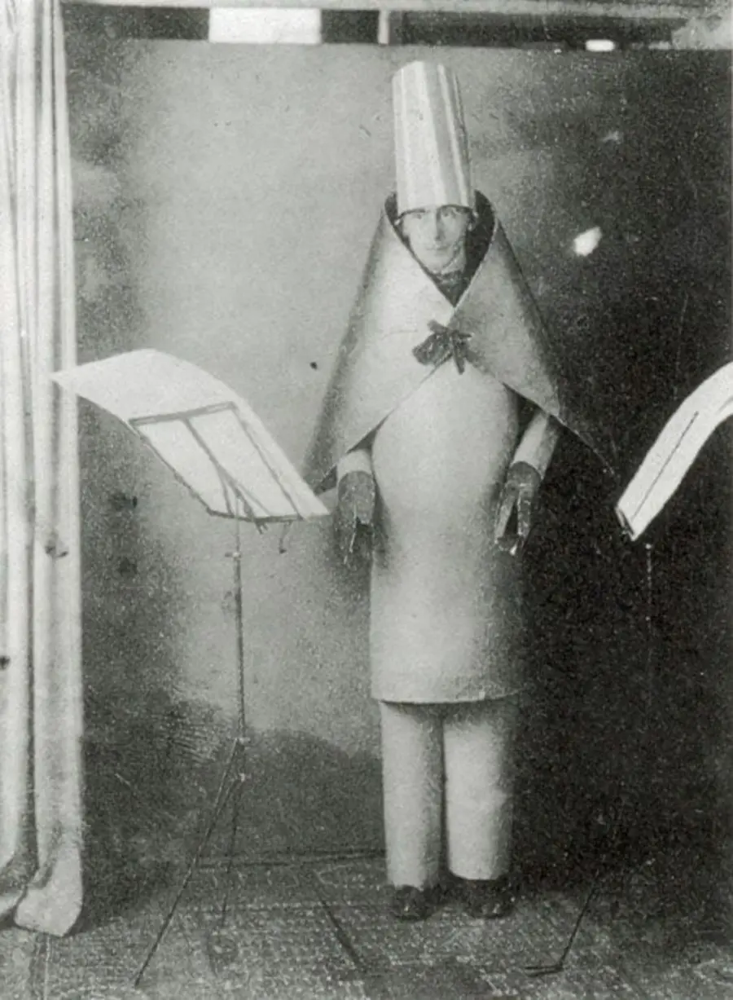
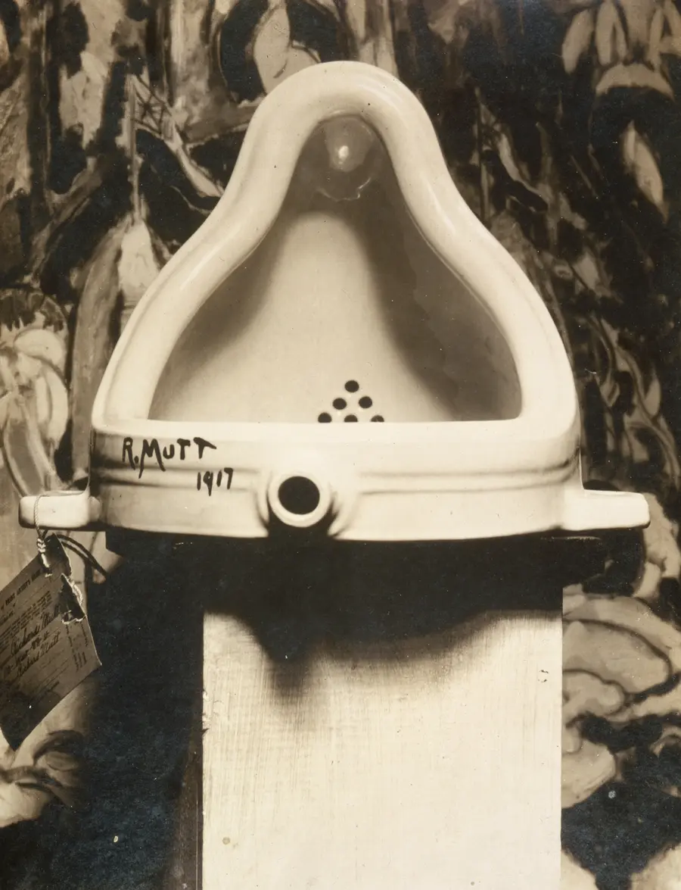
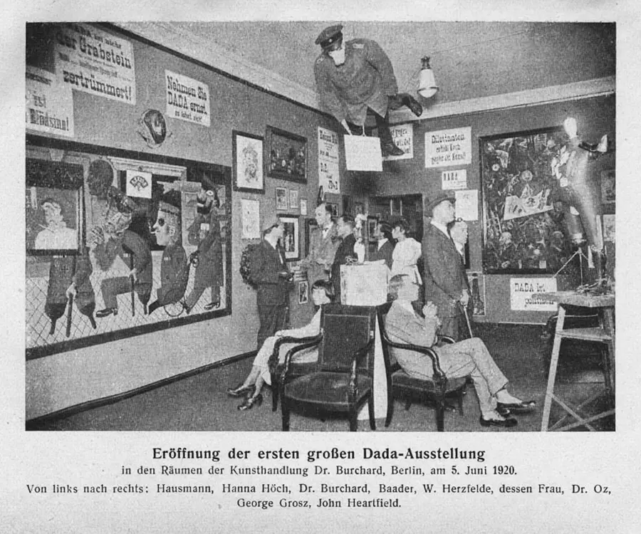
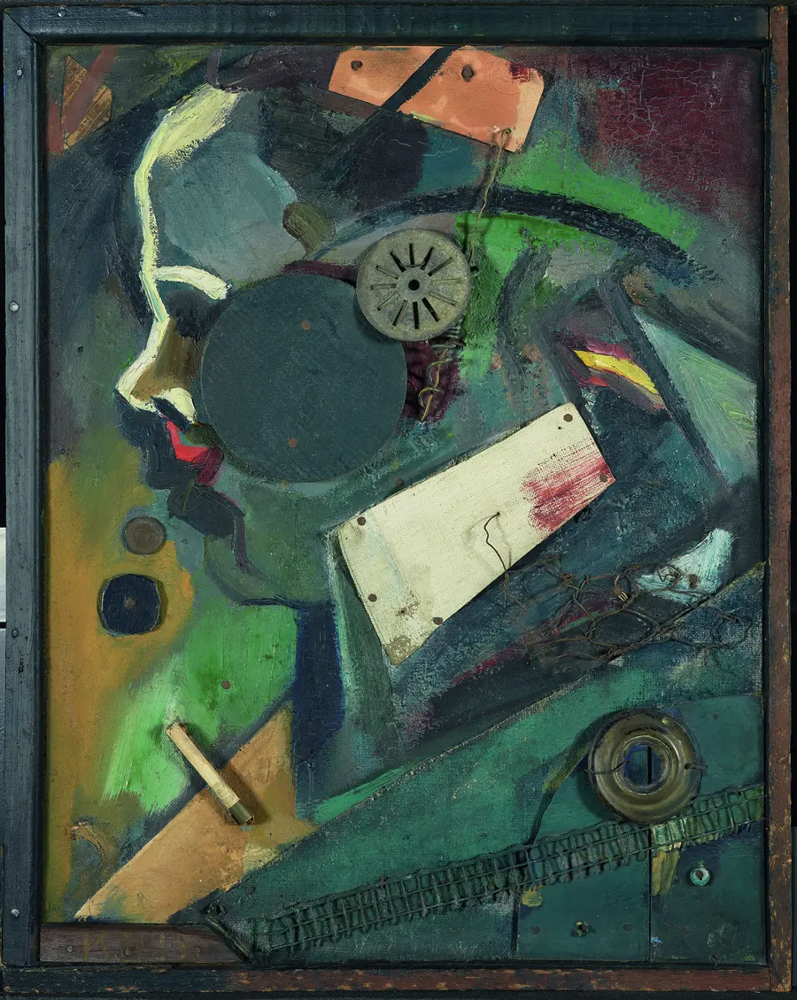
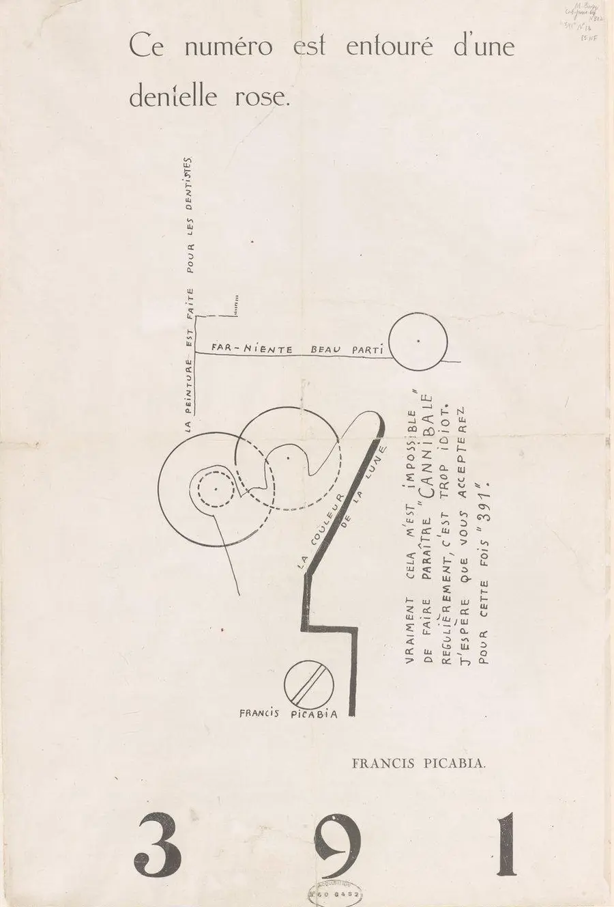

Visual Art · Composition & Layout · History of Art
Dadaism
Dada was an art movement born in 1916 that broke every rule of "good" art on purpose — no perspective, no realism, no polish, sometimes not even any sense at all. A urinal could be a sculpture. Words cut from a newspaper and shuffled at random could be a poem. To the artists who started it, that wasn't laziness — it was a protest, and it permanently changed what artists were allowed to call "art."
Where Did Dada Begin?
By 1916, World War I had been grinding on for two years, killing soldiers by the millions across Europe. To a small group of artists and poets who had fled the fighting for neutral Switzerland, something had clearly gone very wrong with "civilized" society — the same culture that produced fine art, tidy logic, and polite manners had also produced machine guns, poison gas, and trench warfare. They didn't want to make beautiful art that pretended everything was fine. They wanted to make art that matched the chaos and pointlessness they saw in the world around them.
On February 5, 1916, performer Hugo Ball and singer Emmy Hennings opened the Cabaret Voltaire, a small nightclub in Zurich, Switzerland. It quickly became a stage for wild, confrontational performances: nonsense poems shouted over pounding drums, actors in cardboard costumes, art that had no message you could pin down. That nightclub is considered the birthplace of Dada.

Why is it called "Dada"?
Was Dada trying to be funny, or serious?
Meet the Dadaists
Dada didn't stay in one club in Zurich for long. Within a few years, artists carried its ideas to Berlin, Paris, and New York, and each city put its own spin on what "anti-art" could mean.

Duchamp argued that an artist could simply choose an ordinary manufactured object, declare it art, and that decision alone made it art. No carving, no painting required.

In Berlin, artists like Hannah Höch, Raoul Hausmann, and George Grosz turned Dada into biting political satire aimed at the German government and military.

Schwitters built art entirely from garbage — bus tickets, wrappers, broken wood — proving that literally anything discarded could be arranged into something worth looking at.

Picabia spread Dada through cheap, fast-printed magazines, using nonsense "machine" drawings to poke fun at a society that worshipped industry and efficiency.
Anti-Art: Breaking Every Rule on Purpose
Most art movements before Dada tried to get better at something — better realism, better color, better composition. Dada instead asked: what if an artist broke every one of those rules on purpose, and let the results be strange, ugly, or random? Here are the main tools Dadaists used to do that.
Take an ordinary object — a urinal, a bottle rack, a snow shovel — and call it art simply by choosing and displaying it.
Cut photographs out of newspapers and magazines, then glue the pieces back together into a single, jarring new image — pioneered by Hannah Höch and Raoul Hausmann.
Recite invented words that aren't part of any real language, chosen for how they sound rather than what they mean.
Let randomness — a dice roll, a drawn slip of paper, a word pulled from a hat — decide part of the artwork, instead of the artist's own choices.
Build art from trash and scraps — bus tickets, wood, wire, wrapping paper — rather than expensive paint or marble.
Use jokes, nonsense, and mockery as a serious artistic weapon against a society Dadaists believed had lost its mind.
Try It: Make a Poem by Chance
In 1920, poet Tristan Tzara wrote instructions for making a Dadaist poem: cut the words out of a newspaper article, drop them in a bag, shake it, and pull the words out one at a time in whatever order chance gives you. The result is your poem — "an infinitely original author of charming sensibility," Tzara joked, even though nobody actually wrote a single word of it.
Try the same trick below. Each click pulls a fresh handful of scraps out of a virtual hat — click any single scrap to swap just that word for a new random one.
Click "Pull From the Hat" to draw new scraps. Click any single scrap to reroll just that word.
Is this really "art" if a machine (or chance) made it?
Dada's Legacy Today
Dada itself burned out fast — by the early 1920s, many of its artists had moved on to a related movement called Surrealism, which used dreamlike imagery instead of pure randomness to explore the unconscious mind. But Dada's core tools didn't disappear. They kept resurfacing in movement after movement for the rest of the century.
Photomontage and collage became standard tools of graphic design and advertising. Duchamp's readymades opened the door for later artists — including Pop Art icons like Andy Warhol, who turned soup cans and celebrity photos into gallery art the same way Duchamp had turned a urinal into a sculpture. Punk rock's ransom-note flyers and DIY zines borrowed Dada's cut-and-paste look directly. And today's internet meme culture — remixing found images and text into something absurd, fast, and disposable — runs on nearly the same idea Dada pioneered over a century ago: that anyone can cut up the existing culture and reassemble it into something new.
Practice Problems
Test what you know about Dada's origins, its key artists, and its anti-art tools.
Easy1. What major world event most directly inspired the birth of Dada in 1916?
Easy2. In which city did Hugo Ball and Emmy Hennings open the Cabaret Voltaire, the birthplace of Dada?
Medium3. Marcel Duchamp's "readymades" were ordinary objects declared to be art. What object did he sign "R. Mutt" and submit as Fountain in 1917?
Medium4. The Cabaret Voltaire opened in 1916, and the First International Dada Fair was held in Berlin in 1920. How many years passed between the two?
Medium5. In Tristan Tzara's method for writing a Dada poem, newspaper words are cut out, dropped into a container, and pulled out one at a time. What decides the order of the words?
Easy6. Which technique — pioneered by Hannah Höch and Raoul Hausmann in Berlin — cuts photographs apart and glues the pieces into a new image?
Challenge7. Why did Dadaists deliberately fill their art with randomness, nonsense, and humor instead of skill and beauty?
Challenge8. Which of these modern practices most directly carries forward a Dada technique?